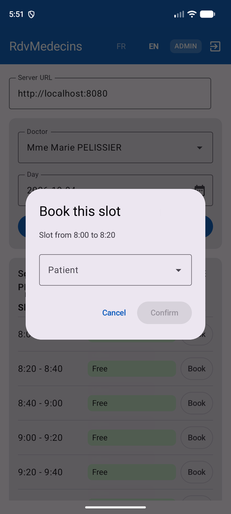

6. Capítulo 5 - Executando o aplicativo: emulador, celular, APK
6.1. Um único alvo: Android
O Capítulo 5 do curso de Flutter mostrou como um único código-fonte é compilado para três famílias de alvos: mobile, desktop e web. Não é o que acontece aqui: o cliente deste documento é um aplicativo Android—e somente Android. Em vez disso, ele usa diretamente as ferramentas e bibliotecas da plataforma ([Gradle], [Android Studio], [ViewModel], [SharedPreferences]...), sem uma camada de abstração. A última seção deste capítulo explica o que seria necessário para também atingir o iOS, o desktop e a web.
Os comandos deste capítulo usam a ferramenta [adb] e o Gradle wrapper. No Windows, se as pastas [platform-tools] e [emulator] do SDK não estiverem no [PATH], substitua [adb] por [& "$env:LOCALAPPDATA\Android\Sdk\platform-tools\adb.exe"] (veja o Capítulo 1).
6.2. Alvo: emulador
Este é o alvo usado em todo o Capítulo 4. No Android Studio: selecione o emulador na lista de dispositivos e, em seguida, escolha [Run]. Na linha de comando, na pasta do projeto:
6.2.1. A armadilha de rede: localhost não se refere mais ao PC de desenvolvimento
É O detalhe importante a conhecer no desenvolvimento mobile, sem relação com Kotlin ou Compose: [localhost] (ou [127.0.0.1]), no campo “Server URL”, refere-se à máquina que executa o código. Ora, o emulador é uma máquina VIRTUAL, distinta do PC de desenvolvimento onde o servidor [NestJS] está em execução, embora ambos pareçam “estar no mesmo computador”. Há duas soluções:
- o endereço especial [http://10.0.2.2:8080]: específico do emulador oficial do Android, ele é redirecionado para o [localhost] da máquina hospedeira. É o valor padrão do campo “Server URL” (veja [SettingsService.kt]);
- o comando [adb reverse tcp:8080 tcp:8080], seguido da URL [http://localhost:8080]. [adb reverse] cria um túnel: qualquer conexão do dispositivo para a SUA porta 8080 é encaminhada pelo [adb] para a porta 8080 do computador. O túnel desaparece quando o emulador é encerrado (ou quando o servidor [adb] é reiniciado): é preciso então executar o comando novamente.
A primeira solução é a mais simples. No entanto, no computador usado para escrever este documento, ela não funcionou: a conexão com [10.0.2.2:8080] falhou após o tempo limite de 10 segundos, embora o servidor respondesse normalmente em [localhost]. Esse tipo de problema depende da configuração de rede do PC (firewall, VPN, software de virtualização): [adb reverse] contorna esse problema, já que o tráfego passa então pelo [adb] e não pela rede virtual do emulador. A mensagem exibida pelo aplicativo (“Incorrect login or password.”) não ajuda muito; a causa exata pode ser encontrada no log do Android, graças às chamadas do cliente a [Log.w(...)] (a aba [Logcat] do Android Studio, filtrada por [RdvMedecins], ou o comando [adb logcat -s RdvMedecins]):
O comando [adb reverse] e a URL [http://localhost:8080] (salva por [SettingsService]) resolveram o problema: esta é a configuração usada em todas as capturas de tela do Capítulo 4.
6.3. Alvo: celular
O celular configurado no Capítulo 1 (opções do desenvolvedor, depuração USB) aparece em [adb devices] e na lista de dispositivos do Android Studio: ele funciona exatamente como o emulador ([Run] ou [gradlew installDebug]). Apenas a URL do servidor muda:
- celular conectado por cabo USB: o comando [adb reverse tcp:8080 tcp:8080] também funciona com um celular real, e a URL [http://localhost:8080] passa então a alcançar o servidor do PC pelo cabo. Essa é a solução mais simples;
- celular na mesma rede Wi-Fi que o PC: use o endereço IP LOCAL do PC nessa rede (por exemplo, [http://192.168.1.48:8080]; o comando [ipconfig] o exibe no Windows), nunca [localhost] ou [10.0.2.2], pois ambos se referem ao próprio celular nesse caso. O firewall do PC deve então permitir conexões de entrada na porta 8080 (o Windows pede que você faça isso na primeira vez que o Node.js é iniciado).
O servidor [NestJS] escuta em todas as interfaces de rede do PC ([0.0.0.0]): nenhuma alteração é necessária do lado dele.
6.4. Duas restrições específicas do mobile
6.4.1. Tráfego HTTP sem criptografia
A partir do Android 9 (API 28), por padrão, um aplicativo não pode mais se comunicar em HTTP “plaintext” ([http://], sem criptografia): somente [https://] é permitido. Como o servidor deste curso escuta em HTTP simples, o manifesto do cliente declara a exceção [android:usesCleartextTraffic="true"] (veja o Capítulo 4). Sem ela, qualquer requisição falha com a exceção [CLEARTEXT communication to 10.0.2.2 not permitted by network security policy].
Essa autorização vale para TODOS os servidores. Uma configuração mais granular é possível, usando um arquivo [res/xml/network_security_config.xml] que permite HTTP simples apenas para determinados nomes de host:
O arquivo é declarado no manifesto por meio do atributo [android:networkSecurityConfig="@xml/network_security_config"] da tag [<application>]. Este documento não o utiliza: o endereço IP de um PC em uma rede Wi-Fi não é conhecido antecipadamente. Em ambos os casos, essas configurações valem apenas para o desenvolvimento: em produção, o servidor seria exposto em [https://] (por exemplo, atrás de um “proxy reverso” como o Nginx), o que tornaria qualquer exceção desnecessária.
6.4.2. Permissão de acesso à rede
Sem a linha [<uses-permission android:name="android.permission.INTERNET" />] no manifesto, a primeira requisição falha, lançando uma exceção [SocketException: socket failed: EPERM (Operation not permitted)] (ou uma exceção [SecurityException: Permission denied (missing INTERNET permission?)] quando a URL contém um nome de host). Trata-se de um descuido comum: o template de projeto do Android Studio não a inclui.
6.5. Rotação da tela
Girar o celular (ou o emulador, pelos botões de rotação da sua barra lateral) DESTRÓI e depois RECRIA a activity (veja o Capítulo 3). O cliente lida com isso graças a três escolhas feitas no Capítulo 4:
- os serviços são construídos por [RdvMedecinsApplication], que não é recriada;
- o estado da tela (médicos, pacientes, agenda, horário em processo de agendamento) é armazenado em [AppViewModel], que o Android preserva;
- os estados menores da interface (login em digitação, médico e dia selecionados, paciente selecionado na caixa de diálogo) são armazenados em [rememberSaveable].
As capturas de tela a seguir foram feitas com a caixa de diálogo de agendamento aberta: primeiro no modo paisagem e depois de volta ao modo retrato. A caixa de diálogo, a agenda e o médico e o dia selecionados continuam lá:


No modo paisagem, a tela tem mais de 600 dp de largura: a barra de título exibe o título completo e o nome do usuário, e [DoctorDayPicker] dispõe seus três elementos em uma única linha:

Para avaliar o valor dessas escolhas, podemos tentar o oposto: em [App.kt], substitua [val vm = viewModel { AppViewModel(auth, api) }] por [val vm = remember { AppViewModel(auth, api) }]. Após uma rotação, a agenda desaparece e a pesquisa precisa ser refeita: [remember] não sobrevive à recriação da activity.
6.6. Uma tela estreita: a armadilha do layout
Um celular em modo retrato tem apenas cerca de 400 dp de largura. A primeira versão de [ScheduleView.kt], assim como a do cliente Flutter, tropeçou nessa largura. Cada linha da agenda dividia a largura disponível entre suas três colunas com pesos fixos—30% para o horário, 45% para o status e 25% para o botão ([Modifier.weight(0.25f)]). No celular, na interface em francês, 25% da linha não eram suficientes para o rótulo “Réserver”, que era truncado para “Rése”:


A correção (captura de tela à direita; veja [ScheduleView.kt] no Capítulo 4): o botão não tem mais peso e ocupa a largura do seu texto; o horário tem largura fixa; o status ocupa a largura restante ([Modifier.weight(1f)]). Daí decorrem duas regras, as mesmas do cliente Flutter:
- Nunca presuma uma largura: deixe um elemento assumir o tamanho do seu conteúdo ou verifique a largura realmente disponível ([BoxWithConstraints], [LocalConfiguration.current.screenWidthDp]) para escolher um layout;
- Teste cedo em uma tela estreita e nos dois idiomas: os rótulos em inglês (“Book”, “Cancel”) são mais curtos que os rótulos em francês, e um bug pode aparecer em apenas um dos dois.
6.7. Gerar um APK
[gradlew assembleDebug] (Capítulo 1) gera [app/build/outputs/apk/debug/app-debug.apk], um aplicativo “debug”: assinado com uma chave de desenvolvimento gerada automaticamente pelo Android Studio, ele pode ser instalado em um emulador ou em um celular ([adb install app-debug.apk]), mas não pode ser publicado na Play Store. Para uma distribuição real:
Uma versão de produção deve ser assinada com uma chave pessoal, criada uma única vez e guardada com segurança: o Android Studio oferece o menu [Build / Generate Signed App Bundle or APK...] para isso. A Play Store também exige um ícone, uma política de privacidade... e um servidor em [https://].
6.8. E o iOS—aplicativos desktop e web? Kotlin Multiplatform
O cliente Flutter do curso gerava aplicativos mobile, desktop e web a partir de uma única base de código. O equivalente existe no ecossistema Kotlin: o [Kotlin Multiplatform] (KMP) permite compartilhar código Kotlin entre Android, iOS, desktop (JVM) e web, enquanto o [Compose Multiplatform], da JetBrains, estende o Jetpack Compose a esses mesmos alvos. Portar o cliente deste documento consistiria principalmente em substituir as bibliotecas específicas do Android por equivalentes multiplataforma:
- [OkHttp] → [Ktor Client], o cliente HTTP multiplataforma da JetBrains;
- [SharedPreferences] → uma biblioteca multiplataforma de armazenamento chave-valor (por exemplo, [DataStore], que agora é multiplataforma);
- a pasta Android [assets/] → recursos do Compose Multiplatform;
- [android.util.Log], [Handler] → seus equivalentes multiplataforma (ou corrotinas em [Dispatchers.Main]);
- a classe Application e a activity permanecem, mas apenas para o alvo Android: cada alvo tem seu próprio ponto de entrada.
As funções @Composable, as classes [@Serializable], as corrotinas e até o ViewModel (disponível em multiplataforma) seriam mantidos quase sem alterações. Esse porte está além do escopo deste documento.
6.9. Tabela-resumo
- Emulador Android - [Run] ou [gradlew installDebug] - Server URL: [http://10.0.2.2:8080], ou [adb reverse tcp:8080 tcp:8080] seguido de [http://localhost:8080];
- Celular USB - [Run] ou [gradlew installDebug] - URL: [adb reverse tcp:8080 tcp:8080], depois [http://localhost:8080];
- Celular Wi-Fi - [Run] ou [gradlew installDebug] - URL: endereço IP local do PC, porta 8080 aberta no firewall;
- em todos os casos: permissão [INTERNET] e autorização para HTTP em texto simples no manifesto;
- Distribuição: [gradlew assembleRelease] (APK) ou [bundleRelease] (Play Store), com uma chave de assinatura pessoal.